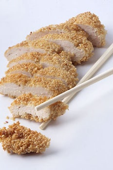

Sesame Crusted Lemon Chicken

What is Sesame Crusted Lemon Chicken
Sesame Crusted Lemon Chicken is a simple Asian dish.
Ingredients
- Whole Chicken Breasts
- Eggs
- Whole Lemons
- Sesame Seeds
- Salt
- Vegetable Oil
Steps
- Put the sesame seeds in a wide bowl or dish and add grated lemon zest to the mixture with a pinch of salt.
- Whisk the eggs in a bowl and squeeze in lemon juice.
- Pat the chicken dry and dip each breast one at at time in the egg. Let the excess drain off, then coat in the sesame seed and lemon zest mixture.
- Heat the oil in a pan to a moderate heat. Place the chicken breasts in the pan and cook until the coating is golden brown and crisp, ensuring the chicken is cooked thoroughly throughout.
Serving Suggestions
Serve alongside a flavourful stir-fry or some rice.